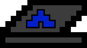
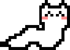
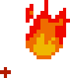
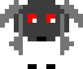

About Me
My name is Isha, but I also go by ixa. I'm a computer science major at MIT (Course 6-3, '21).
I'm primairly interested in cryptography, cybersecurity, algorithms, and game theory.


I enjoy playing/creating games; I can often be found playing one of chess, go, hanabi, Hollow Knight, or one of countless other games I've discovered along the way. I've also written a Live Action Bitcoin(LAB) scenario for Live Action Mafia.
I also spin fire! I usually spin with poi, but I'm also trying to learn contact staff.


I enjoy collecting stuffed animals (and fluffy things in general). I have quite an extensive collection, from bees to bears to mothmen.